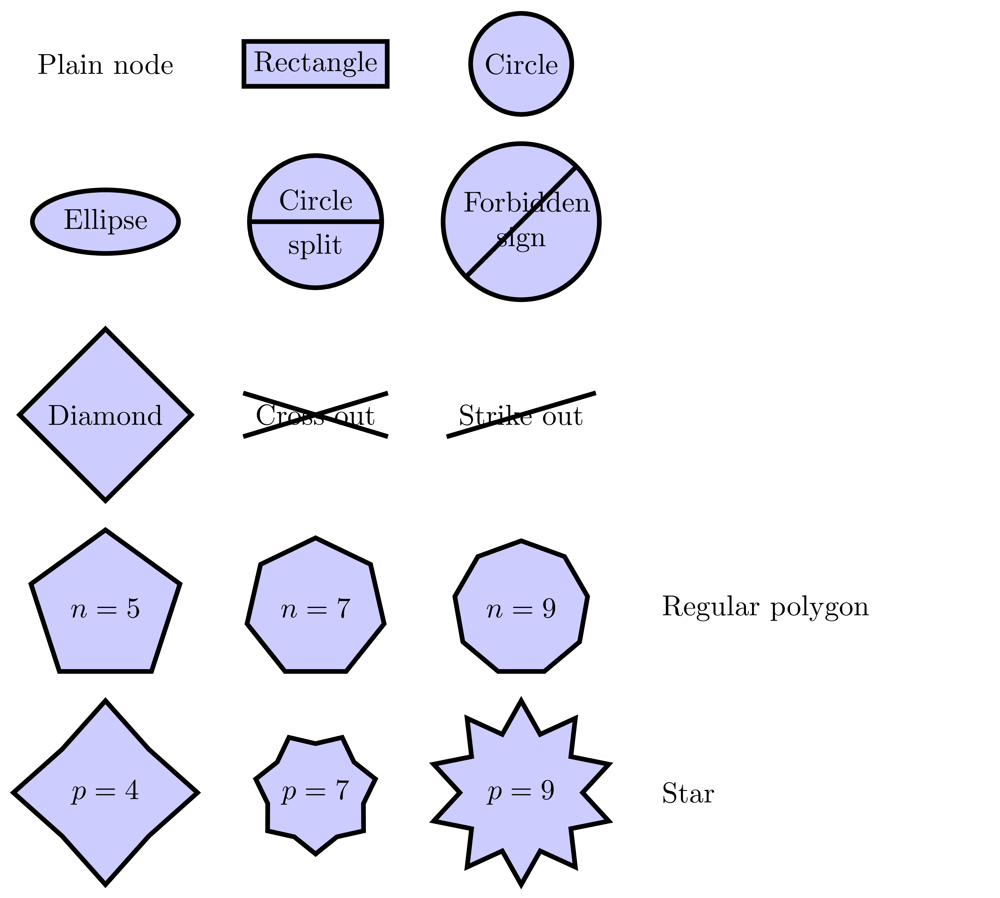
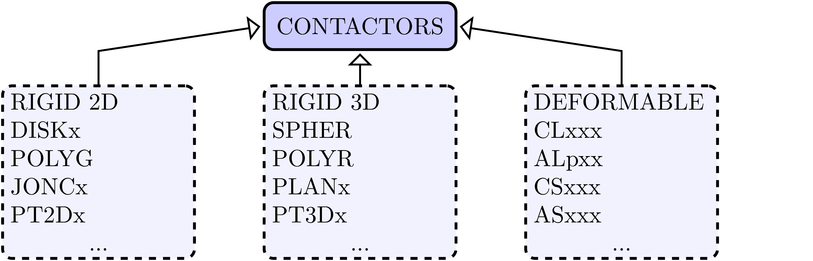
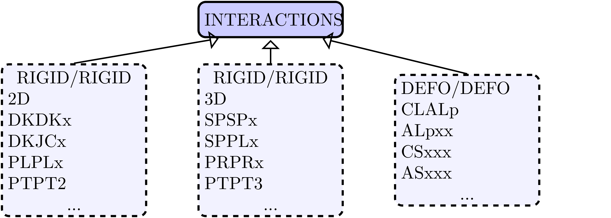

1. Structure of LMGC90¶
1.1. Generalities¶
LMGC90 is an open platform dedicated to the modeling of large collection of interacting objects (2D/3D) with complex mechanical behavior.
There are two levels in LMGC90: Core fortran functions and C/Python wrap functions. The low level functions are implemented in Core modules while the high level functions are implemented in Chipy modules (wrapping Core functions).
LMGC90 Core library provides:
a modeling framework based on a set of:
object shapes (disk/sphere, polygon/polyhedra, etc.);
interaction laws (contact, friction, cohesion, etc.);
bulk behaviors (rigid, elastic, etc.);
multi-physics and couplings;
an analysis framework with various strategies (Molecular Dynamics, Contact Dynamics, etc.)
LMGC90 Chipy is a user interface. It provides a large set of functions, but it is up to you to call them in the right order.
1.2. LMGC90 Core¶
The modeling framework decouples the various parts of the model.
{kind=link}
1.2.1. Contactors¶
A contactor refers to a potential contact zone (in a geometric term).
{kind=link}
Practicaly a contactor manage the mapping between bulk unknowns and contact unknowns. Several contactors can be assigned to a body. Thus, it is possible to describe non convex shapes with convex primitives.
The number of contactors does not change during a simulation process. Contactors disappear when they are asigned to a body which becomes invisible.
One object may contain an assembly of contactors => Clusters
1.2.2. Interactions¶
An interaction refers to the description of a contact element.
{kind=link}
Contact detection generates interactions.
Interactions are used to manage informations useful to formulate and solve the contact problem: contact locus, local frame, gap, relative velocities, local impulses, mappings, etc.
The number of contact elements changes from one step to another. Thus, a special attention is paid to map information from one step to another.
1.2.3. Solvers¶
Solver refers to the numerical method used to solve the global contact problem. Different solvers are available in LMGC90:
NLGS for Non Linear Gauss Seidel [Jean1999], available in 2D and 3D, parallized using OpenMP directives or MPI ones. All interactions could be used with a such algorithm.
Jacobi available in 2D and 3D. All interactions could be used with a such algorithm.
PCPG for Preconditionned Conjugate Projected Gradient [Renouf.Alart2004], available in 2D and 3D, parallized using OpenMP directives and dedicated to frictional contact problems (i.e. IQS_CLB, IQS_DS_CLB, RST_CLB, RST_DS_CLB).
Bipotential A variant of the NLGS where the local frictional contact problem is solved using the bipotential approach [DeSaxce.Feng1998].
Numerics A pack of solvers available with the SiCoNoS Project
1.3. LMGC90 ChiPy¶
All python functions provided by LMGC90 are prefixed : RBDY2_ReadBodies, POLYG_LoadTactors, DKDKx_SelectProxTactors, nlgs_ExSolver…
The prefix is a chosen name which gives information on what module defines the functions. A module is an informatic component allowing to represent a element of the physical problem. For example:
dofs management and computation -> RBDY2/3 xxxxMAILx
geometry -> DISKx, POLYR, ASpxx, etc
local to global mapping -> DKDKx, CSASp, etc
contact solver algorithm -> nlgs, nlgs_3D, etc
A general contact mecanics problem is usually express in terms of different components. Informatic components are mapped on this physical cutting. The filetree of the Core directory groups in a consistent manner this informatics components.
Solver : Algorithms on a list of Interactions
Interactions : Computed values from two geometries (known in LMG90 as Contactors)
Contactors : Geometrical description attached to a mechanical body
Body : The physical behavior of a mechanical (or thermal) body
Bibliography
- Jean1999
M.Jean, “The Non Smooth Contact Dynamics Methods”, Comput. Method. Appl. Mech. Engrg, Vol. 144, pp.
- DeSaxce.Feng1998
G.de Saxcé, Z.Q. Feng, The bi-potential method: a constructive approach to design the complete contact law with friction and improved numerical algorithms, Mathematical and Computer Modelling, 28 (4–8) (1998), pp. 225–245